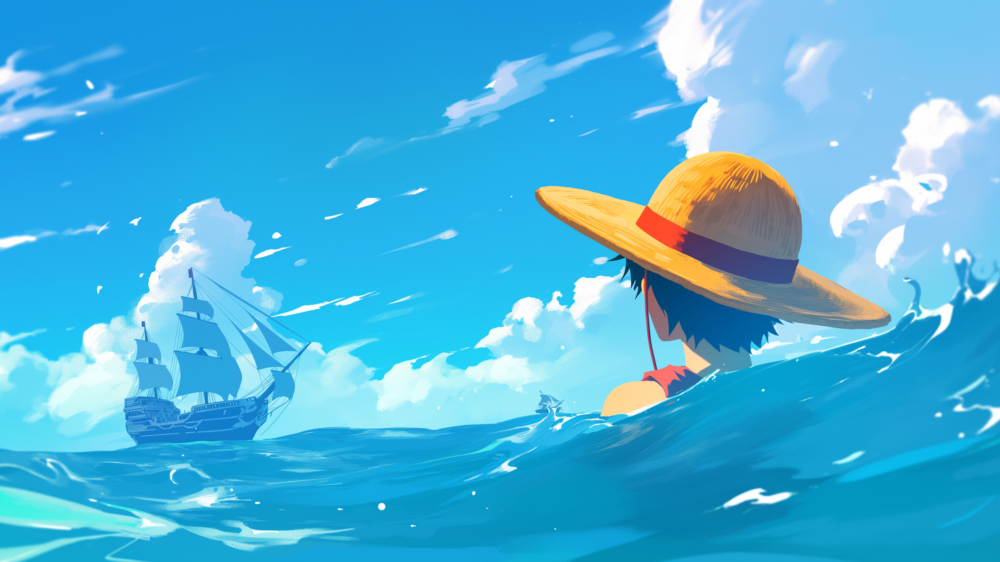
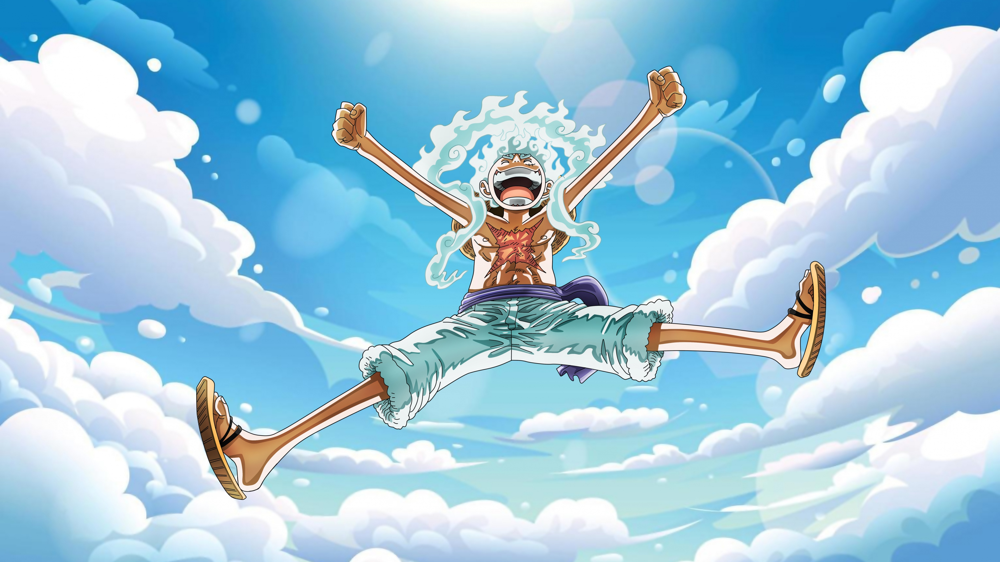
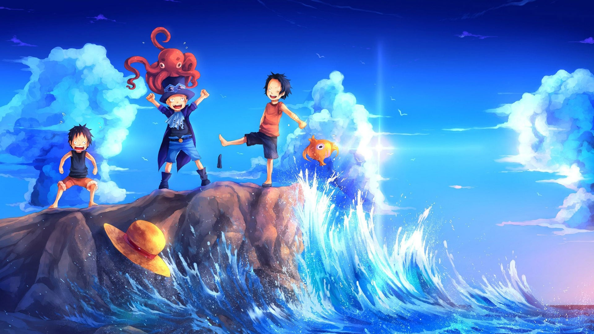

ZARPA HACIA EL ONE PIECE
Adéntrate en el vasto e indomable océano de la Grand Line. Explora los secretos de la Voluntad de D., el despertar de los Dioses Antiguos y la leyenda de Monkey D. Luffy y los Sombrero de Paja.
LA TRIPULACIÓN DE SOMBRERO DE PAJA
Diez navegantes unidos por el destino, la lealtad inquebrantable y sus sueños insuperables.

GEAR 5: DIOS DEL SOL NIKA
Conocido como el "Guerrero de la Liberación". Al despertar su Fruta del Diablo, Luffy adquiere la máxima libertad física, convirtiendo su cuerpo en goma pura capaz de alterar el entorno y hacer reír a los oprimidos al ritmo de los Tambores de la Liberación.
Tambores de la Liberación
El ritmo del corazón de Luffy resuena con fuerza suprema. Su cabello y ropa se vuelven blancos como las nubes y sus ojos brillan con el aura divina de Nika.
HERMANOS DE SAKE: LUFFY, ACE Y SABO
En las profundidades del Monte Colubo y el Terminal Gray, tres niños compartieron una copa de sake sellando un pacto indestructible. Ninguna tormenta en la Grand Line, ni el destino más trágico, podrá romper el lazo de la hermandad ASL.
La Voluntad de D.
Aquellos que llevan la inicial "D." son considerados los enemigos naturales de los Nobles Mundiales (Tenryuubito). Portan la sonrisa frente a la muerte y la búsqueda constante de libertad.
Los Poneglyphs y el Siglo Vacío
Grandes monolitos indestructibles de piedra escritos en una antigua lengua. Los Road Poneglyphs indican la ubicación exacta de Laugh Tale, la isla oculta donde se encuentra el One Piece.
Los Cuatro Emperadores (Yonko)
Los piratas más poderosos que gobiernan el Nuevo Mundo. Con la caída de Kaido y Big Mom, la nueva era pertenece a Luffy, Shanks, Buggy y Blackbeard.

ENCICLOPEDIA DE FRUTAS DEL DIABLO
Misteriosas frutas que otorgan habilidades sobrehumanas a cambio de la maldición del mar.
CRONOLOGÍA DE LAS SAGAS
Revive la travesía desde el modesto Mar del Este hasta los confines del Nuevo Mundo.
GENERADOR DE CARTELES "WANTED"
¡Únete a la era pirata! Personaliza tu propio cartel de recompensa oficial de la Marina y descárgalo.